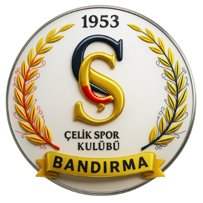

Köklü geçmişimizi temsil eden lacivert ve altın tonlarımız; güç, istikrar ve prestijin simgesidir.
Bandırma Çelikspor Kulübü, 1953 yılında şehrimizin spor kültürüne katkı sunmak amacıyla kuruldu. Marmara'nın bu önemli liman kentinde sporun ve özellikle takım sporlarının gelişimine yön veren kulübümüz, yıllar içinde pek çok branşta sporcu yetiştirdi.
Bugün Kadın Voleybol Takımımız ile Bandırma'yı parkelerde temsil ediyoruz. Disiplinli antrenmanlar, genç yetenekleri keşfeden alt yapı çalışmalarımız ve şehrimizin coşkulu taraftarıyla birlikte; yeni sezonda hem skor hem de karakter olarak zirveye oynamak istiyoruz.
Lacivertin asaleti, altının güçlü birleşimi. Dinamik ışık efektleri, hareketi ve enerjiyi yansıtır. Laurel desenimiz, köklü geçmişimizi ve zaferi geleneğimizi simgeler. Her detayda; güç, birlik ve mücadele ruhu vardır.

Sahanın her anında bedensel ve zihinsel olarak güçlüyüz.
Sözümüze, takım arkadaşımıza ve sahaya hep güveniriz.
Hedefe kilitleniriz; dağılmadan, vazgeçmeden çalışırız.
Tek bir yürek, tek bir hedef. Daima takım olarak hareket ederiz.
Çalışmanın karşılığını her sezon sahada görmeyi biliriz.
"Sahada bir kişi değil, koca bir şehir oynar."
— Bandırma Çelik Spor Kulübü
Çelik Spor Kulübü, Bandırma'da bir grup sporsever tarafından kurulur. Marmara'nın liman şehrinde sporun gelişimine yön verecek bir kurum doğar.
Kulübümüz bölgesel düzeyde ilk önemli kupasını kazanır. Lacivert-altın renkler şehir tarihinde yer eder.
Kulübümüz, Bandırma'nın ilk kadın voleybol takımını kurar. O günden bu yana parkenin yıldızı olduk.
Bandırma Şehir Spor Salonu'nun modernize edilmesiyle takımımız yeni evine kavuşur. Genç yeteneklerimize daha donanımlı imkânlar sunulur.
U14, U16 ve U18 takımlarımız profesyonel kadroyla yeniden yapılandırılır. Bugün A takım kadromuzdaki çoğu sporcu bu alt yapının ürünüdür.
Yenilenen kadromuz ve modernleşen tesisimizle yeni bir sayfa açıyoruz. Geleceğe daha güçlü bakıyoruz.
15 yıllık voleybol tecrübesi
Profesyonel kariyeri Türkiye 1. Ligi'nde başlayan Kaya, son 6 sezondur Çelik Spor'un başantrenörlüğünü sürdürüyor.
Eski milli sporcu
2008-2014 yılları arasında milli takım kadrosunda yer aldı. Saha içindeki tecrübesini bugün kadromuza aktarıyor.
Spor bilimleri uzmanı
Sporcu performans takibi ve sakatlık önleme alanında uzmanlaşmış antrenmanlarıyla takımımıza katkı sağlıyor.